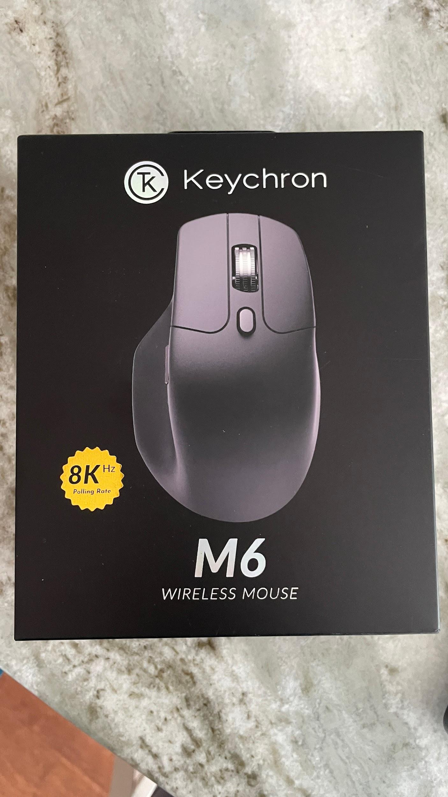
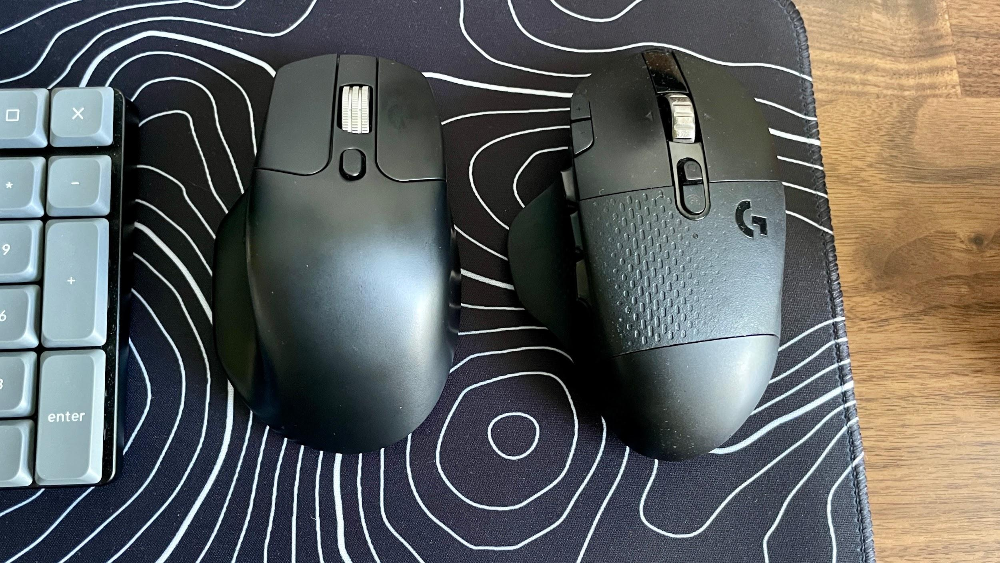
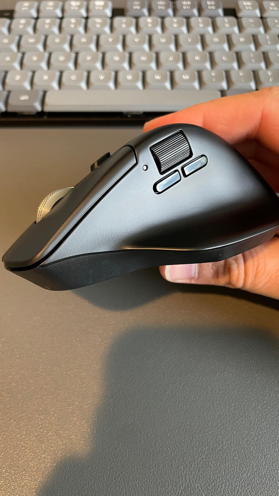
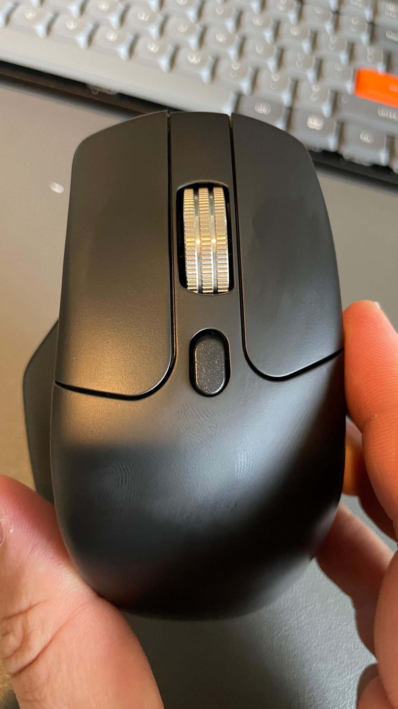
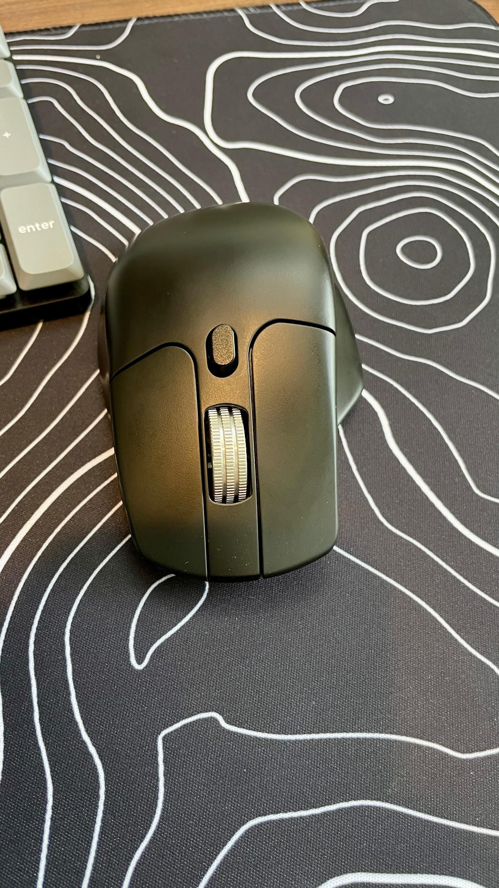
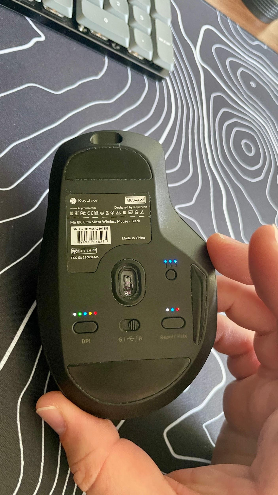
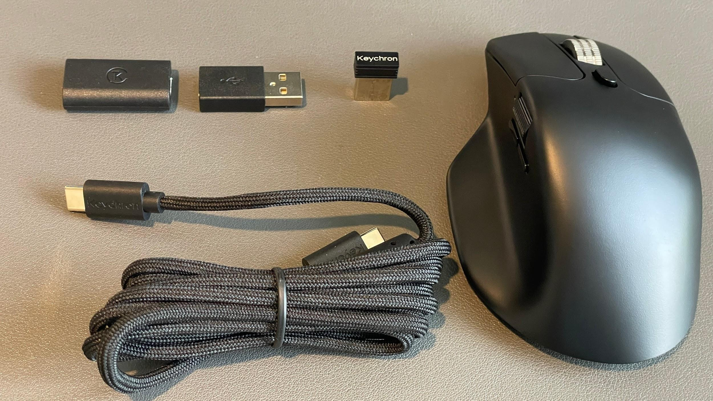
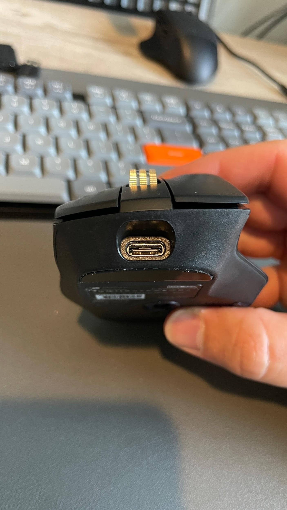

This review is part of my ongoing WFH Desk Upgrade series, where I'm working through my home office setup one piece at a time and looking at what actually makes a difference to the way I work.
So far, we've upgraded the speakers with Edifier and covered a Keychron keyboard. I've also got an upcoming review of the UPLIFT Desk standing desk that has become part of the setup, and I'm hoping the next piece of the puzzle will be a new monitor setup.
That leaves a lot of smaller pieces that can have a surprisingly big impact on how I use the desk every day.
One of those is the mouse.
For me, a mouse isn't just a device for moving a cursor around the screen. I spend enough time at my desk that I want the mouse to be an extension of my keyboard, giving me quick access to the functions I use throughout the day.
That's one of the reasons I've been using the Logitech G604 for so long.
And it's also why the Keychron M6 caught my attention.

More Than Just Forward and Back
The G604 wasn't my choice because it was a gaming mouse. It was my choice because it gave me something I value much more than RGB lighting or an absurdly high polling rate: programmable buttons.
I spend a lot of time at my computer, and I don't want every function I use throughout the day to require reaching back to the keyboard.
Screenshot. Copy. Paste. Mute the microphone. Go back. Show the desktop. Launch a particular function. Run a macro.
Those are the things I want my mouse to handle.
That's where the Keychron M6 immediately made sense to me.
The G604 Comparison
This is where my Logitech G604 comparison comes in.
The G604 and M6 aren't identical mice, and there are some obvious differences in shape and weight. The M6 is significantly lighter, while the G604 has a more substantial feel in the hand.

The M6 also has a more pronounced hump across the top, so the shape feels different even though both mice are designed around a similar ergonomic concept.
But the important similarity isn't the thumb rest.
It's the additional controls.
That's the feature I care about most.
The thumb rest is something I appreciate on both mice, but the reason I gravitated toward the G604 in the first place was the ability to put functions beyond basic mouse navigation at my fingertips.
The M6 gives me that same general capability while allowing me to customize the controls to my current workflow.
And because Keychron's Launcher software makes changing those assignments relatively straightforward, I don't have to settle for whatever Keychron decided those buttons should do.
I can make them do what I need.
The Thumb Rest Is Really Well Done
The thumb rest on the M6 deserves some attention.
The surface is slick and smooth, which makes it easy to transition my thumb from the resting position up toward the buttons. There isn't a rough texture or rubberized surface trying to grip my thumb in place.
That matters because I'm constantly moving between the thumb rest and the controls above it.

The mouse also has a dedicated thumb scroll wheel, which gives you another input that can be assigned through Launcher.
I've found this particularly useful because I can turn that otherwise unusual control into something much more practical for my workflow.
For me, that ended up being copy and paste.
It's a perfect example of why I like programmable mice. Keychron doesn't have to decide what the thumb wheel is for. I can decide.
A Very Good Scroll Wheel
The primary scroll wheel is another place where the M6 feels more refined than its price would suggest.
Keychron uses a metal wheel with an aggressively knurled surface. The three rows of knurling give your finger plenty of traction, and I've found it particularly useful when working through large spreadsheets.

You can also click the button behind the wheel to switch into an infinite scroll mode.
At this point, I consider infinite scrolling almost mandatory on a productivity focused mouse. Once you've used it to move through a long spreadsheet, document or webpage, going back to a traditional scrolling experience can feel painfully slow.
I've also remapped the buttons around the scroll wheel.
On my setup, I've assigned them to back and desktop view functions for my Dell laptop.
Again, those aren't necessarily the functions everyone needs. That's why the ability to remap them matters.
Lightweight Makes a Difference
The first physical difference I noticed moving from the G604 to the M6 was the weight.
The M6 is considerably lighter.

That's not something I expected to care about as much as I do, but after using it for a while, I appreciate how little effort it takes to move the mouse around my desk.
My primary display is a 34 inch monitor, with a separate 16 inch display positioned underneath it. I frequently move the cursor between the two, and the M6's sensor sensitivity allows me to cover that workspace without making large movements with my wrist.
I can tune the sensitivity to match my setup rather than constantly lifting and repositioning the mouse.

That makes the lighter weight even more useful.
The mouse doesn't feel like it's fighting me as I move it around the desk.
The Value Is the Part That Really Gets Me
This might be my favorite part of the M6.
The feature set compared with the price is excellent.
The Logitech G604 was already an expensive mouse when it was available. Mine cost roughly twice what the M6 costs today.
But the G604 has since been discontinued, and that has done something strange to its pricing. Finding one today can cost several times what the mouse originally sold for.
That makes the M6's value proposition even more compelling.
I'm not saying the M6 is simply a replacement for the G604. The shape, weight, button layout and overall feel are different enough that someone who loves the G604 may still prefer it.
But when I look at what I'm actually getting from the M6, the amount of functionality Keychron has packed into this mouse for the price is impressive.
I'm getting a lightweight ergonomic mouse, multiple programmable controls, a dedicated thumb wheel, a metal scroll wheel with infinite scrolling, adjustable sensor sensitivity, multiple connectivity options and software that lets me configure the mouse around my workflow.


And I'm not paying a premium simply because the mouse has a bunch of buttons on it.
That's what makes the M6 such a compelling value.
This Is the Kind of Mouse I Want
I don't need my mouse to be complicated for the sake of being complicated.
I want it to make using my computer easier.
If I can hit a button with my thumb to mute my microphone, another to take a screenshot, use another for copy or paste, and have additional controls available for the functions I use regularly, that's useful.
That's productivity.
And that's ultimately what the WFH Desk Upgrade series is about.
I'm not trying to build a desk that simply looks good sitting in a photograph. I'm trying to build a workspace that makes spending eight or more hours at that desk easier and more efficient.
The speakers from Edifier improved the audio side of the setup. The Keychron keyboard changed the way I interact with the computer. The UPLIFT Desk is giving me the ability to change my working position throughout the day. If I can get the monitor setup upgraded as planned, that will address another major part of how I work.
The M6 fits into that same philosophy.
It is a relatively small upgrade, but it is something I interact with constantly.
And when I compare what it gives me with what I paid for it, the value is hard to ignore.
The Logitech G604 cost roughly twice as much when it was available, and with it now discontinued, current pricing can be several times higher. I'm not convinced the G604 offers enough of an advantage to justify that kind of money, especially when the M6 gives me the programmable controls and workflow customization that I actually care about.
That's the part of the M6 that has impressed me the most.
It isn't trying to be a $150 mouse.
It doesn't need to be.
It's giving me the controls I want, the ergonomics I need, the customization I expect and the performance necessary to run a multi monitor workspace, all at a price that makes sense for a work from home setup.
Keychron sent the M6 over for me to test, and I appreciate them continuing to trust me with their products. I've had the opportunity to spend time with several Keychron products now, and the M6 is another example of why I've enjoyed working with the company.
As the WFH Desk Upgrade continues, I'm looking forward to seeing what the next piece of the setup brings.
Keychron didn't just build a lighter alternative to a discontinued favorite, they built a genuinely well thought out productivity mouse. The programmable thumb wheel, knurled infinite scroll, and Launcher software deliver most of what made the G604 worth owning, at a fraction of what that mouse now costs on the used market. For anyone building out a WFH setup, the M6 is an easy recommendation.